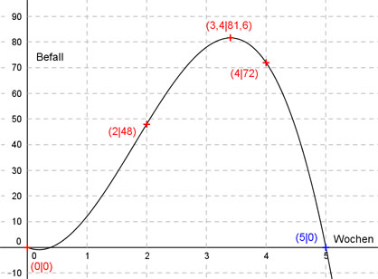

Aufgabe 144 In einer forstwirtschaftlichen Untersuchung ermittelt man wochenweise den Befall von Schadstoffinsekten und stellt ihn mit Hilfe einer ganzrationalen Funktion 3. Grades dar. Die Messung beginnt nach 0,4 Wochen noch ohne einen Befall. Nach 2 Wochen beträgt er 48, nach 3,4 Wochen 81,6 und nach 4 Wochen 72. Nach wieviel Wochen ist er wieder verschwunden?  Allgemeine Form einer ganzrationalen Funktion 3. Grades: f(x) = ax3 + bx2 + cx + d f’(x) = 3ax2 + 2bx + c f’’(x) = 6ax + 2b 4 Bedingungen: 1. Die Messung beginnt nach 0,4 Wochen noch ohne einen Befall bedeutet: f(0,4) = 0 --> a * 0,43 + b * 0,42 + c * 0,4 + d = 0 --> 0,064a + 0,16b + 0,4c + d = 0 I 2. Nach 2 Wochen beträgt er 48 bedeutet: f(2) = 48 --> a * 23 + b * 22 + c * 2 + d = 48 --> 8a + 4b + 2c + d = 48 II 3. Nach 3,4 Wochen beträgt er 81,6 bedeutet: f(3,4) = 81,6 --> a * 3,43 + b * 3,42 + c * 3,4 + d = 81,6 --> 39,304a + 11,56b + 3,4c + d = 81,6 III 4. ..und nach 4 Wochen 72 bedeutet: f(4) = 72 --> a * 43 + b * 42 + c * 4 + d = 72 --> 64a + 16b + 4c + d = 72 IV I * (-1) + II -0,064a - 0,16b - 0,4c - d = 0 8a + 4b + 2c + d = 48 --------------------------------- 7,936a + 3,84b + 1,6c = 48 V I * (-1) + III -0,064a - 0,16b - 0,4c - d = 0 39,304a + 11,56b + 3,4c + d = 81,6 ----------------------------------- 39,24a + 11,4b + 3c = 81,6 VI I * (-1) + IV -0,064a - 0,16b - 0,4c - d = 0 64a + 16b + 4c + d = 81,6 ---------------------------------- 63,936a + 15,84b + 3,6c = 81,6 VII V * (-2,25) + VII -17,856a - 8,64b - 3,6c = -108 63,936a + 15,84b + 3,6c = 72 -------------------------------- 46,08a + 7,2b = -36 VIII V * (-1,875) + VI -14,88a - 7,2b - 3c = -90 39,24a + 11,4b + 3c = 81,6 ----------------------------- 24,36a + 4,2b = -8,4 IX VIII * (-4,2) + IX * 7,2 -193,536a - 30,24b = 151,2 175,392a + 30,24b = -60,48 ---------------------------- -18,168a = 90,72 |:(-18,168) a = -4,99 --> -5 gerundet a = -5 in VIII eingesetzt: 46,08 * (-5) + 7,2b = -36 -230,4 + 7,2b = -36 |+230,4 7,2 b = 194,4 |:7,2 b = 27 a = -5 und b = 27 in VI eingesetzt: 39,24 * (-5) + 11,4 * 27 + 3c = 81,6 -196,2 + 307,8 + 3c = 81,6 111,6 + 3c = 81,6 |-111,6 3c = -30 | :3 c = -10 a = - 5 und b = 27 und c = -10 in II eingesetzt: 8 * (-5) + 4 * 27 + 2 * (-10) + d = 48 -40 + 108 - 20 + d = 48 48 + d = 48 |-48 d = 0 Gesuchte Funktion: f(x) = -5x3 + 27x2 - 10x Bedingung für die Nullstellen: f(x) = 0 -5x3 + 27x2 - 10x = 0 -x(5x2 - 27x + 10) = 0 --> x1 = 0 Eine zweite Nullstelle liegt bei x2 = 0,4 (siehe Aufgabenstellung) Polynomdivision: 5x² - 27x + 10 : x - 0,4 = 5x - 25 -(5x² - 2x) ------------ - 25x + 10 -(- 25x + 10) ------------- 0 -x1(x2 - 0,4)(5x3 - 25) = 0 5x3 - 25 = 0 | +25 5x3 = 25 | :5 x3 = 5 Wochen Nach 5 Wochen ist der Befall wieder gleich Null.